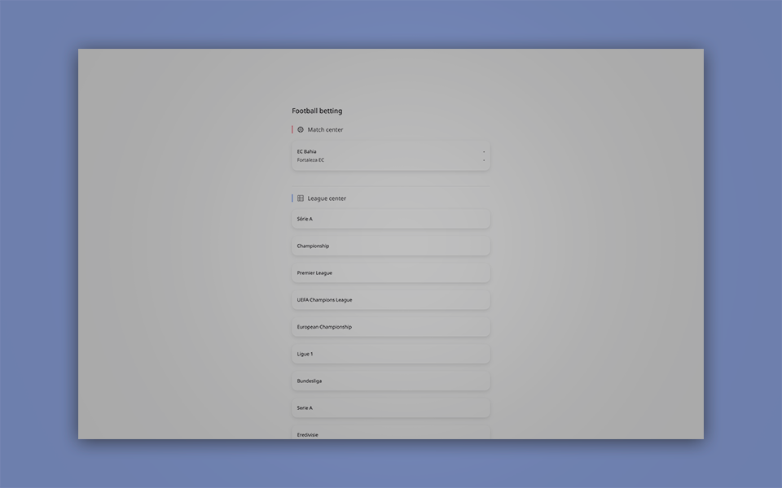

Repertoire
Follow the money music industry
Follow the money music industry
Create a music playlist together
Automotive test equipment

Progressive web application
HTML 5 is the foundation of every website. There are many reasons why I think you should master this language. When this language is used properly, it is possible for any individual in the world to visit a website, regardless of whether the user has a disability. During the years of practice I discovered that writing good HTML is really essential. Whenever I start a new project, I try to make some sketches and indicate in the sketches which HTML elements are needed. By working precisely in the beginning, I try to ensure that there is a good structure on which to build.
How a website or an application looks is very important. For the client, but also for the user. By using the right typography, colors, margins and many other aspects, a certain look and feeling is created that the user must be able to identify with. CSS is the language in order to make the most diverse things possible and to let a website or application perform optimally. I think CSS is a very cool language to play with. By means of this language it is possible to create a lot of interaction in a website without 1 line of JavaScript. I always try to troubleshoot with CSS first. When I get stuck, I use JavaScript to optimize the interaction.
As I have already described above, I mainly use JavaScript in the last phase of an interaction. But over the years I have started to use JavaScript more and more. Mainly for the backend side of an application. Because of the minor Web Development that I followed, I often set up my own servers with Express, created databases with MongoDb and worked a lot with NodeJS. This is what makes JavaScript so versatile and very interesting to learn. I will have to practice more to really get the most out of the language, but it has aroused my interest more and more.
Every time I start a new project, I have a lot of things in mind that I want to make. Sometimes my head explodes with ideas about how an application should appear. Sketch helps me a lot to quickly and easily create a user interface that serves as the basis of a project. I can always fall back on this when I'm getting stuck with prototyping.